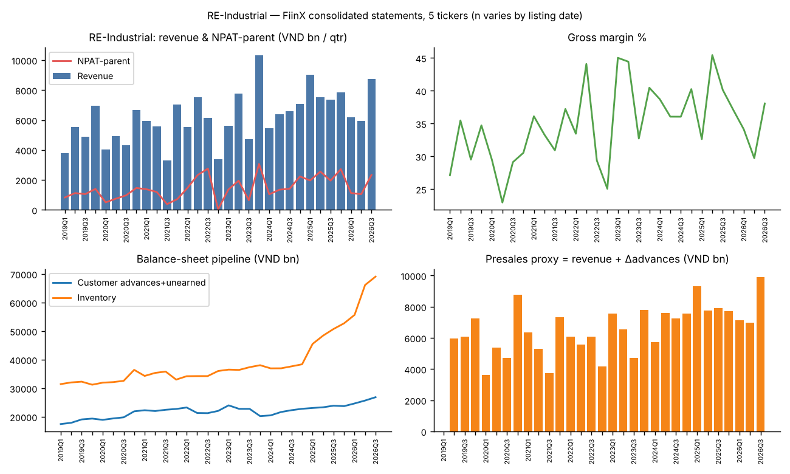
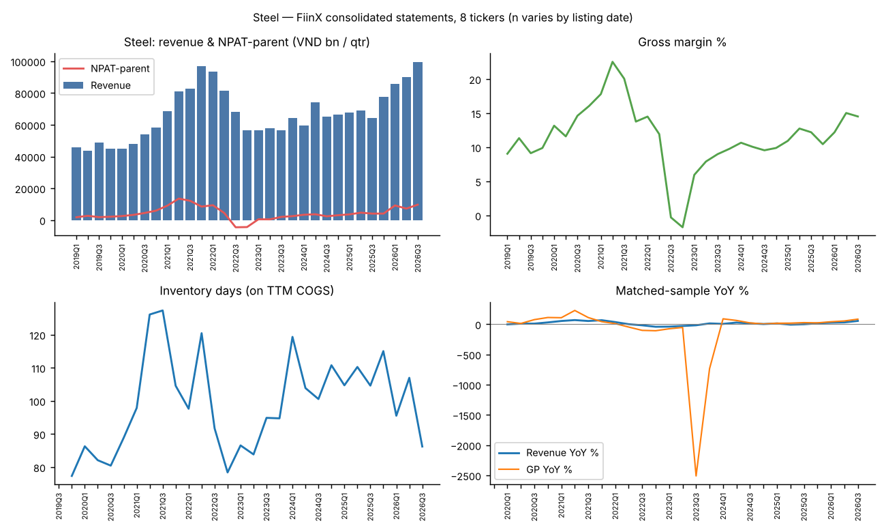
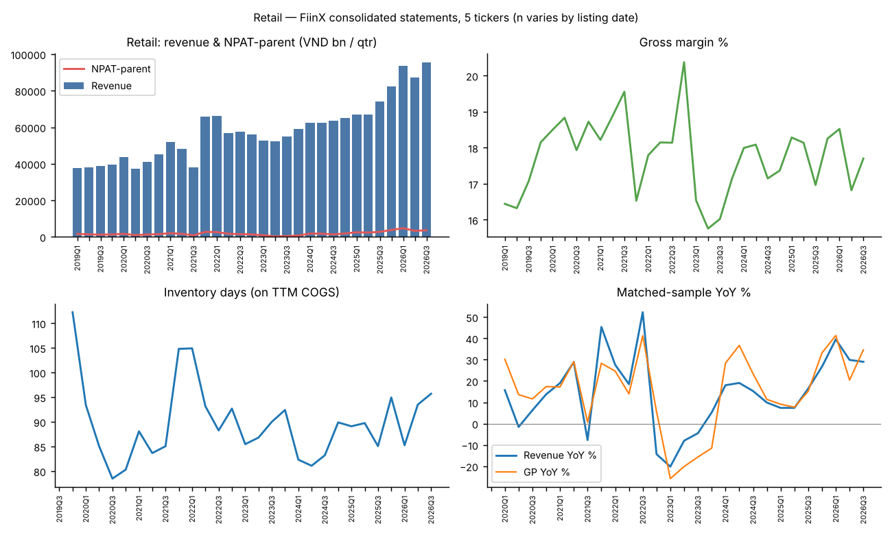

Sector Pulse — Real Estate, Steel, Retail (data to Q3 2026)
Vietnam listed real estate, steel and retail: quarterly tally, drivers and trends. Financial data to Q3 2026.
What this is: a quarterly tally of the biggest listed developers (plus steel and retail) built from FiinX consolidated statements, read for drivers and trends. Units: VND bn unless stated; "tn" = 1,000 bn. 9M = Q1–Q3 sum, so 2026 compares like-for-like with prior years. Balance-sheet items at Q3-end. Reading convention: OBS = verifiable from data, INF = my judgment.
0. Universe and method
| Cohort | Tickers (top by market cap in ICB, FiinX snapshot ~2026-11-09) | Exclusions |
|---|---|---|
| RE-Residential (15) | VHM, KSF, NVL, SSH, VPI, KDH, SJS, CRV, DXG, TCH, TAL, PDR, NLG, DIG, CEO | VIC (consolidates VHM → double count), VRE (mall landlord), VEF (exhibition) |
| RE-Industrial (5) | BCM, KBC, IDC, SIP, SZC | — |
| Steel (8) | HPG, HSG, NKG, TVN, SMC, VGS, POM, TIS | POM has no Q3/26 filing yet → 9M26 slightly understated |
| Retail (6) | MWG, FRT, DGW, PNJ, PET (+DMX tracked, excluded from totals — MWG subsidiary) | MSN/WinCommerce (conglomerate) |
Presales problem (first principles). VN developers do not report contracted sales in financial statements. Revenue is booked at handover (lags sales by 1–3 years). What the balance sheet does show is cash collected before handover: customer advances + unearned revenue. So:
presales proxy (qtr) = revenue recognised + Δ(customer advances + unearned revenue)
Validation: VHM proxy 9M26 = 235.8tn vs company-reported presales 219.6tn web: [CafeF/VHM via evidence note] → within 7%. Known bias: it is a floor for developers that book pre-SPA deposits (đặt cọc) as "other payables" — VHM clearly does (see 1.4). It also mixes in non-property revenue (construction, leasing).
1. Residential real estate — record P&L, forward indicators rolling over

1.1 P&L: a VHM-shaped boom
| 9M | 2023 | 2024 | 2025 | 2026 |
|---|---|---|---|---|
| Revenue | 112.3tn | 93.6tn | 80.9tn | 244.3tn (+202%) |
| NPAT-parent | 35.5tn | 19.1tn | 16.9tn | 86.6tn (+413%) |
| Gross margin | 38.6% | 28.4% | 30.7% | 56.5% |
| Revenue ex-VHM | 17.7tn | 23.7tn | 29.8tn | 41.7tn (+40%) |
| NPAT ex-VHM | 3.2tn | -0.6tn | 2.5tn | 15.3tn |
- OBS: VHM = 83% of cohort revenue, 82% of NPAT in 9M26. VHM 9M revenue 202.6tn vs 51.1tn; GM 59% vs 23%.
- OBS: Ex-VHM profit recovery is broad but uneven: NVL back to profit (+2,989bn vs -1,482bn), KSF 4,695bn (vs 1,426), SSH 1,966bn (vs -286), SJS 1,432bn (vs 174). KDH's 1,209bn includes 916bn of financial income.
- INF: 2026 is a handover year for sales made in the 2025 launch wave (legal unblocking → launches → deposits in 2H25 → recognition in 2026). The record P&L tells you about 2025 demand, not 2026 demand.
1.2 Presales / advances: up YoY, turning down QoQ
| Quarter | Q3/25 | Q4/25 | Q1/26 | Q2/26 | Q3/26 |
|---|---|---|---|---|---|
| Advances + unearned (all) | 165.0tn | 167.6tn | 196.0tn | 235.8tn | 222.8tn (-5.5% QoQ) |
| … ex-VHM | 56.5tn | 72.9tn | 80.0tn | 86.9tn | 94.8tn (+9.1% QoQ) |
| Presales proxy (all) | 100.3tn | 133.8tn | 103.7tn | 109.3tn | 86.4tn |
| … ex-VHM | 35.1tn | 45.4tn | 17.4tn | 24.3tn | 22.0tn |
- OBS: Advances up YoY at 11 of 15 developers (+35% total; ex-VHM +68%). Biggest builders of new deposit books: PDR (25bn → 5.8tn), DXG (3.0 → 9.1tn), TAL (1.2 → 5.1tn), KSF (19.1 → 32.3tn), TCH (3.1 → 5.6tn), KDH (0.4 → 1.9tn).
- OBS: But 6 of 15 fell QoQ in Q3/26 and the aggregate fell for the first time this upcycle, led by VHM (-14% QoQ). VHM itself reported Q3 presales 71.5tn vs 81.7tn in Q1 and unbilled backlog falling 196.8tn → 185.6tn [web, [M]].
- OBS [web]: Market absorption dropped in Q3/26 — DKRA southern apartment absorption 3,471 units, -66% QoQ (CafeF); Savills Hanoi new supply -51% YoY, market absorption 39% (Tiền Phong).
- INF: Sales momentum peaked around Q4/25–Q2/26. Recognition is now outrunning new sales at the leader; mid-caps are still filling deposit books from launches, but the quarterly proxy ex-VHM (~22tn) is half the Q4/25 level.
1.3 Supply and leverage: inventory and debt up faster than deposits
| Q3-end | 2024 | 2025 | 2026 |
|---|---|---|---|
| Inventory | 312.0tn | 393.8tn | 542.6tn (+38%) |
| Borrowings | 175.6tn | 275.9tn | 415.8tn (+51%) |
| Net debt / equity (incl. cash + HTM deposits) | 0.35 | 0.47 | 0.52 |
| 9M operating cash flow ex-VHM | -16.4tn | -8.1tn | -15.9tn |
- OBS: Debt build-up concentrated in land-banking names: KSF 1.6tn (Q3/24) → 36.1tn; PDR 4.4 → 13.6tn; KDH 7.8 → 17.8tn (inventory 22.5 → 29.9tn); TAL 3.8 → 7.7tn; CEO 0.5 → 2.9tn; NVL 59.8 → 72.4tn. Deleveraging: DIG (3.7 → 1.3tn), NLG (6.6 → 5.1tn).
- OBS: Ex-VHM operating cash flow has been negative in every 9M period 2021–2026.
- OBS [web]: Funding costs moved against them: mortgage fixed-rate average 10.9% (Aug-26) vs ~5.5–6% teasers in 2025 (The Investor); 2026 credit growth target ~15% with bank RE lending capped at total-credit growth (Viet Nam News); new land price tables from 1/1/2026 raise land costs [web].
- INF: The sector re-levered into a rate up-move. Developers that bought land/launched in 2025–26 with bank debt (KSF, PDR, TAL, CEO, KDH) carry the most rate-and-absorption risk if Q4/26–1H27 sales stay weak.
1.4 VHM balance sheet — the single largest swing factor
| VHM, Q3-end | 2024 | 2025 | 2026 |
|---|---|---|---|
| Total assets | 524.7tn | 768.3tn | 1,339.2tn |
| Borrowings | 72.2tn | 141.5tn | 240.6tn |
| Short-term other payables | — | 107.2tn | 401.7tn |
| Prepayments to suppliers | — | 54.9tn | 198.3tn |
| Customer advances + unearned revenue | 50.4tn | 108.5tn | 128.0tn |
- OBS: Assets 2.6x in two years; +294tn of short-term other payables and +143tn of supplier prepayments in 12 months.
- INF (unverified — needs the Q3/26 notes): other payables most likely hold buyer deposits under deposit agreements and/or partner capital for mega-projects; supplier prepayments likely include land clearance and contractors (possibly related parties). If deposits, true presales are larger than the proxy; if partner/related-party funding, the Vin ecosystem's cash loop is the sector's key systemic dependency. Action: read VHM Q3/26 note on "phải trả khác" and "trả trước cho người bán".
1.5 What the market is pricing
- OBS (FiinX snapshot ~2026-11-09): YTD price — KDH -47%, CEO -39%, PDR -38%, BCM -38%, DIG -34%, DXG -27%, NLG -25%, NVL -15%, VHM +1%, VIC +38%. P/B: NVL 0.58, NLG 0.86, DIG 0.87, PDR 0.92, DXG 0.97, KDH 0.99, VHM 1.73.
- INF: The market is already discounting the credit/absorption turn in mid-caps despite record sector earnings. Book-value support (P/B < 1) is only as good as inventory realisability at 10%+ mortgage rates.
2. Industrial parks — investment phase, lumpy recognition

- OBS: 9M26 revenue 20.9tn (-13%), NPAT 4.5tn (-30%), but Q3/26 revenue +19% YoY (8.7tn). Inventory 50.7 → 69.1tn (+36%), debt 60.2 → 73.4tn, ND/E 0.61 (0.55). 9M operating cash flow negative two years running (-10.7tn, -7.7tn). KBC inventory 25.1 → 35.4tn; IDC 1.3 → 8.2tn (new parks).
- OBS [web]: Southern Tier-1 land absorption 9M26 163ha, +56% YoY, rents +1.5% YoY; ready-built factory absorption -48% (TBTCVN/CBRE). Registered FDI 10M26 US$54.85bn (TBTCVN). US Section 301 +12.5% on most VN goods from 24/7/2026 (VnEconomy).
- INF: Demand is holding (land leasing up), earnings dip is a recognition-timing + land-bank-build effect, funded by debt. Driver to watch: tariff regime stability → FDI disbursement → MOU-to-lease conversion.
3. Steel — HPG capacity + import protection; the rest is flat

| 9M | 2024 | 2025 | 2026 |
|---|---|---|---|
| Revenue | 198.7tn | 201.1tn | 275.6tn (+37%) |
| NPAT-parent | 9.4tn | 12.3tn | 26.1tn (+112%) |
| Gross margin | 10.1% | 12.0% | 14.0% |
| Revenue YoY by quarter (matched sample) | Q1 +27%, Q2 +31%, Q3 +55% | ||
| Ex-HPG revenue / NPAT (ex-POM) | 92.7tn / 1.0tn | 89.5tn / 1.2tn | 103.3tn / 2.9tn |
- OBS: HPG = 62% of revenue, 90% of NPAT. HPG 9M26 revenue +55% (170.3tn), gross profit 30.8tn vs 18.1tn, inventory days 92 vs 136. HPG NPAT includes 5.9tn financial income in Q1/26 (vs ~0.4–0.7tn/qtr normally) — a one-off to strip out; source not identified.
- OBS [web]: Dung Quat 2 ramp: 9M26 crude steel 10.7Mt (+35%), HRC sales 5.47Mt (+59%) (TBTCVN); Vietnam's final AD duty on Chinese HRC 23.10–27.83% from 6/7/2025 (The Leader).
- OBS: Galvanisers are stuck: HSG revenue +12%, NPAT flat (561 vs 570bn); NKG NPAT 253bn, inventory days up to 149 (128). TVN's NPAT jump (1,742 vs 503bn) is mostly financial income (1,374bn). Sector ND/E fell 0.60 → 0.45 (Q3/25 → Q3/26).
- INF: Steel's 2026 trend is one driver — import substitution (AD duty + DQ2 HRC replacing Chinese imports) — and its demand engine is domestic construction tied to RE handovers and public investment. Export-exposed coated steel faces trade defence and does not participate. Second-order risk: residential presales rolling over (§1.2) hits construction-steel demand with a 2–4 quarter lag.
4. Retail — modern trade taking share; PNJ is the outlier

| 9M (ex-DMX) | 2024 | 2025 | 2026 |
|---|---|---|---|
| Revenue | 188.3tn | 208.0tn | 275.9tn (+33%) |
| NPAT-parent | 4.9tn | 7.7tn | 11.6tn (+52%) |
| Gross margin | 17.7% | 17.8% | 17.7% |
| Inventory (Q3-end) | 46.5tn | 52.4tn | 77.2tn (+47%) |
| 9M operating cash flow | 10.7tn | 8.3tn | -1.8tn |
- OBS: MWG revenue +30% (147.8tn), NPAT-parent 9.1tn (+84%), equity 31.8 → 52.4tn after the DMX IPO (DMX listed 6/8/2026 at 80,000 VND [web, TTTCTT]). FRT +33% (NPAT 1,069 vs 505bn), DGW +44% (786 vs 388bn), PET +43%.
- OBS: PNJ revenue +29% but GM 10% (21%), NPAT 472bn (1,610bn). [web, VnEconomy] Q3/26 loss 258bn; EGM 21/10 cut FY26 plan to a -6.3tn loss on ~7.1tn buy-back-obligation provisions; ~8tn placement approved (ceiling).
- OBS [web]: National retail sales 10M26 +13.5% nominal (Tạp chí KT-TC); 2pp VAT cut expires 31/12/2026, no extension found (PwC).
- INF: Listed chains growing ~2.5x the market (+33% vs +13.5%) = share gain from formalisation and consolidation (flat household-business tax abolished 1/1/2026 [web, single source]). Watch-item: inventory growing faster than sales (+47% vs +33%; MWG inventory days 84 vs 74, FRT 111 vs 100) and negative operating cash flow ahead of the VAT reversion — a possible pull-forward into 2026.
5a. Macro overlay (FiinX get_economy / get_bonds; series in FiinX macro series)
| Indicator | Latest | Comparison | Read |
|---|---|---|---|
| Average lending rate (SBV-reported) | 9.65% (Sep-26) | 7.75% (Oct-25): +190bp in 11 months, rising every month | Credit price tightening — the core RE headwind |
| Medium/long-term VND lending, upper bound | 10.9% (Sep-26) | 10.5% (Jun-26) | Consistent with DKRA 10.9% mortgage print |
| Average deposit rate | 7.0% (Sep-26) | 6.6% (Jun-26) | Banks paying up for funding → more lending-rate pressure |
| Listed banks' RE loan growth | +33% YoY (Q3-26) | +15% (Q4-25) | Credit quantity still flowing to RE — the "cap" is not binding yet |
| RE corporate bonds outstanding | 479tn (Nov-26) | 395tn (end-25), +21%; 2026 YTD issuance 187tn > 154tn FY25 | Bond window open; maturities 2027: Q2 63tn, Q3 23tn, Q4 37tn |
| Construction steel consumption 9M | 11.6Mt (+19% YoY) | 9.7Mt 9M25; Jul–Sep-26 +26%/+36%/+26% YoY | Construction demand still accelerating |
| GDP Q3-26 real | 9.9% | Construction +14.2%, RE activities +5.6%, trade +10.4% | Strong macro backdrop |
| State-budget development spending | 1,120tn (2026, likely plan) | 791tn (2025) | Public investment push supports steel/construction |
| FDI disbursed 10M | US$24.1bn (+13%) | US$21.3bn 10M25 | Supports industrial parks |
| Retail sales (total) YoY | 14.7% (Oct-26) | 7.2% (Oct-25); CPI 5.09% → ~9.6% real | Consumption boom, partly VAT-cut-assisted |
Data caveats (from FiinX pull): system credit growth reads 16.69% YTD for Sep-26 vs 10.19% Aug-26 — likely a data error, not used. 2026 development spending is probably the plan figure. Bank RE loan levels looked mis-scaled; only growth rates used.
What the macro overlay changes (INF): - Driver #1 is a price story, not a quantity story: money is still flowing to developers (bank RE loans +33%, bonds +21%), but at ~190bp higher cost. That explains both rising developer leverage (§1.3) and falling end-buyer absorption (§1.2) — developers can still fund, buyers balk at double-digit mortgages. - The refinancing test moves to 2027 (123tn of RE bond maturities Q2–Q4/27) — the period when 2026 handover cash runs down if presales stay weak. - The steel "2–4Q lag" risk is not yet visible: construction steel demand +19% 9M, Q3 accelerating, GDP construction +14%. Public investment is carrying demand; residential slowdown would show first in 2027 volumes.
5. Synthesis — drivers and trends
Driver map (INF, built on §1–4):
| # | Driver | Mechanism | Direction now | Sectors hit |
|---|---|---|---|---|
| 1 | Credit price (quantity still loose) | Lending rate +190bp in 11 months, mortgage ~10.9% → buyer absorption ↓ → deposits ↓; developers still funded (bank RE loans +33%) → leverage ↑ | Negative, tightening | Residential (now), steel (2–4Q lag), banks (exposure) |
| 2 | Legal unblocking (2024–25 laws) | Projects re-launch → 2025 deposit wave → 2026 handover profits | Positive but already in P&L | Residential |
| 3 | Concentration | Vin ecosystem = ~82% of residential profit; balance-sheet loop via other payables/prepayments | Rising | Residential, index weight |
| 4 | Trade policy | AD duties protect HPG; Section 301 / AD-CVD hit exporters and FDI timing | Mixed | Steel (+HPG / –galvanisers), industrial parks |
| 5 | Consumption formalisation | Tax regime + chain scale → listed share gains | Positive; VAT cut ends 2026 | Retail |
Trend calls (with confidence): 1. Residential earnings peak ≈ late 2026 / 2027, sales momentum already past peak — moderate confidence. Evidence: advances QoQ turn, presales proxy down, VHM backlog shrinking, market absorption -66% QoQ, mortgage rates doubled. 2. Two-tier residential market — high confidence. VHM/Sun (KSF) scale and funding loops vs mid-caps with negative OCF and rising debt. 3. Steel = HPG story through 2027 — high confidence on HPG volume (construction steel demand +19% 9M, public investment rising); moderate on margin (China export prices not retrieved). 4. Retail growth intact into Q4/26, 2027 base-effect risk — moderate confidence (VAT reversion, inventory build). 5. Industrial parks: flat-to-up demand, earnings lumpy, balance sheets stretching — moderate confidence.
The case against
- Q3 advances dip may be accounting, not demand. VHM recognised 85tn of revenue in Q3, consuming advances. Ex-VHM advances still rose 9% QoQ. DKRA's -66% absorption coincided with supply -31% QoQ — launches, not buyers, may be the constraint. Q4 is seasonally the biggest launch quarter. If Q4/26 VHM presales ≥ 80tn (needed for its 300tn+ target [web, plan]), call #1 is wrong on timing.
- Leverage may be healthy. Rising debt + inventory is what a recovery looks like after 2022–23; P/B < 1 at mid-caps already prices risk, so the stocks may have bottomed before the fundamentals.
- Proxy limits. Presales proxy undercounts deposits in other payables (VHM), mixes non-property items, and cannot see JV/associate projects (e.g. NLG's partly deconsolidated projects — its inventory halved 17.9 → 9.2tn, likely structural not sales). Net: the counterargument weakens call #1's timing, not its direction — 2026 mortgage costs are a first-principles headwind no accounting effect offsets. Kept, confidence "moderate".
Revisions made during the analysis
- Caught a data bug: the first pull silently dropped cash (nested field path). Net-debt was overstated; re-pulled cash, re-validated (KDH Q3/26 cash 6,199bn matches direct pull).
- Added ex-VHM / ex-HPG / ex-MWG views — headline sector numbers were concentration artefacts.
- Downgraded the presales proxy from "measure" to "floor" after finding VHM's 402tn other payables.
- Flagged non-operating income (HPG Q1, TVN, KDH) rather than counting it as trend.
- Number audit caught 4 errors in the first draft (inventory/advances trend, steel ND/E base, proxy 'lowest since' label, VHM advances row) — all corrected; the inventory/advances fix removed a claim that supply is outrunning sales.
6. Tracker — leading indicators to refresh each quarter
| Indicator | Where | Q3/26 | Signal |
|---|---|---|---|
| Residential advances QoQ (all / ex-VHM) | sector tracker | -5.5% / +9.1% | First down-quarter |
| Presales proxy (all) | same | 86.4tn | Lowest in five quarters |
| Inventory ÷ advances (residential) | computed | 2.4x | Flat YoY (2.4x); down from 3.5x at Q3/24 |
| Residential ND/E | computed | 0.52 | ↑ |
| VHM other payables + supplier prepayments | FiinX balance sheet | 401.7tn / 198.3tn | Explain before next refresh |
| Steel GM / HPG inventory days | tracker | 14.0% / 92d | Healthy |
| Retail inventory growth − revenue growth | tracker | +15pp | Caution |
| Mortgage rate (DKRA/SBV) | web | 10.9% (Aug) | Headwind |
7. Open questions
- VHM Q3/26 notes: composition of other payables (402tn) and supplier prepayments (198tn); related-party share.
- HPG Q1/26 financial income 5.9tn — what was it?
- Q4/26 presales prints (VHM target needs ~80–130tn in Q4) — the swing test for call #1.
- Web evidence is search-extract level (page fetch blocked): verify [S] rows in the evidence note against filings.
- 2027 refinancing wall: RE bond maturities 63tn in Q2/27 alone (FiinX) — map to issuers (NVL, KSF, VHM?) next refresh.